HUB FIXES · 29 SEP
Branch candidate/hub-fixes-20260929 off the live Hub (hub/release-20260923 at 7f47e49) · pushed, not deployed · nothing written to any database · every screenshot below was taken in a hidden (headless) browser with the page served from this branch under the Hub's own address, all writes intercepted.
1 · STUCK IN ECONOMIC → REGIME
What was wrong. REGIME's header had only the ⛶ button. There was no RELEASES switch on it, and the ECONOMIC tab (even after leaving for NEWS and coming back) reopened REGIME. Only a reload got you out. Reproduced exactly.
Now. REGIME's header carries grey ← RELEASES and ✕ CLOSE buttons (the same look as the BACK / CLOSE pair on every sub-page) and the same RELEASES | REGIME switch as the releases room. Esc goes back to RELEASES (if the ⛶ is open, the first Esc closes that and the second goes back). The ECONOMIC tab always opens on RELEASES. ✕ CLOSE returns to the dashboard.
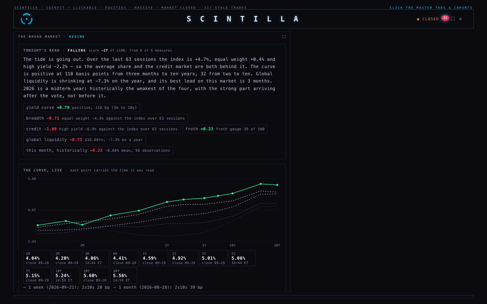
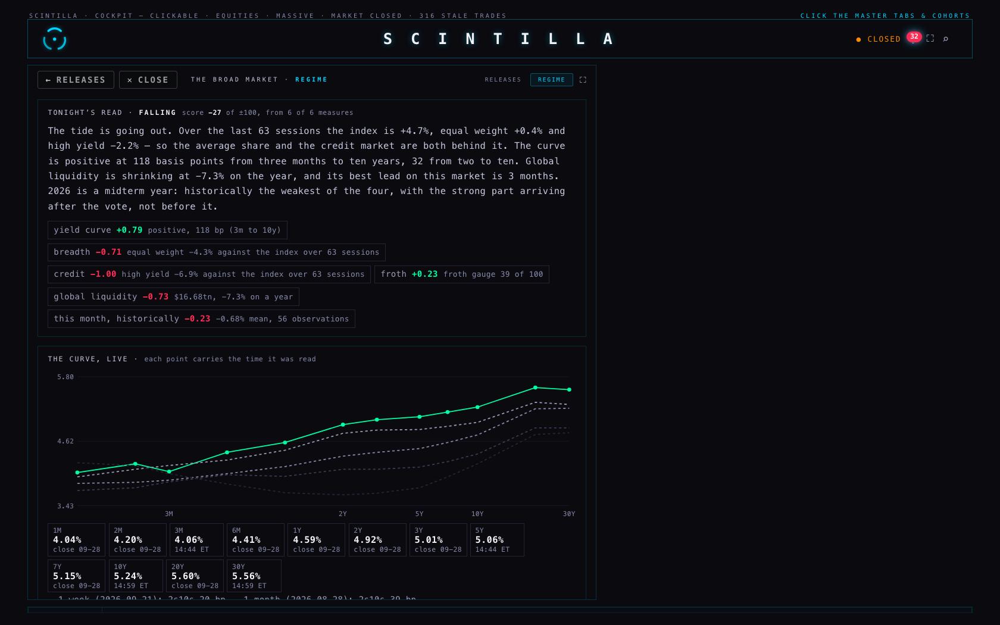
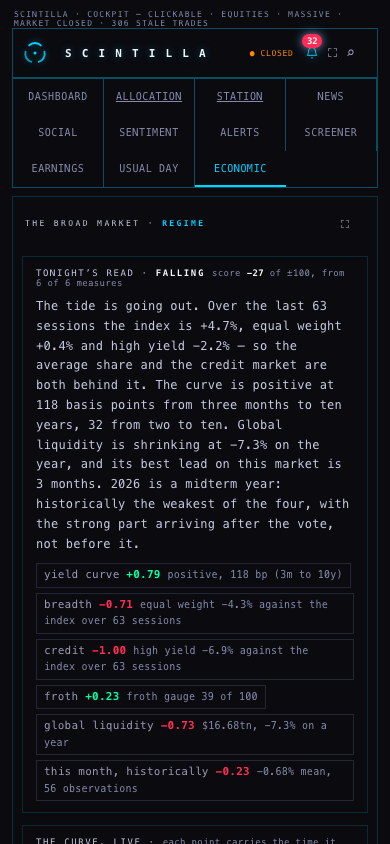
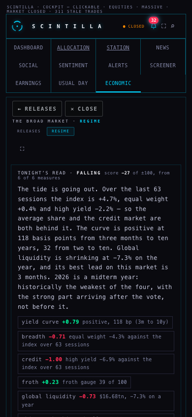
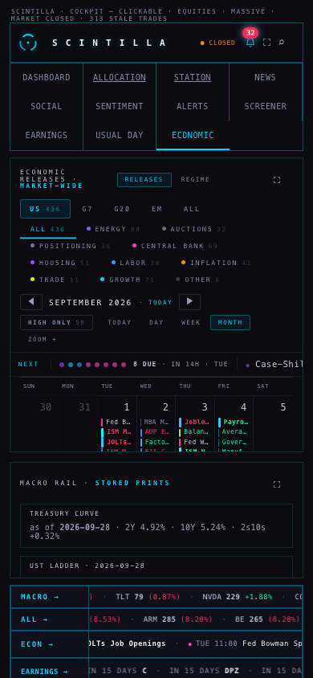
Tested in the browser at both widths: ← RELEASES, the switch, ⛶ then Esc then Esc, the ECONOMIC tab, NEWS and back, ✕ CLOSE — all land where they should.
2 · USUAL DAY, AND THE GOOG NUMBERS
The three numbers, traced
| What you saw | Where it came from |
|---|---|
| (4.46%) · 2.1× its usual day | The detector's stored row for GOOG (Alphabet class C — not GOOGL), written at 16:50 ET, after the close, on an after-hours price of 325.89 against the previous close of 341.08. The detector keeps the first minute a move crosses the line. |
| (0.61%) | USUAL DAY recomputes today's move from the board's latest GOOG price (339.05 at the time of my check) against the same previous close. |
| 0.3 | That same live move divided by GOOG's usual day (±2.14%): 0.60 ÷ 2.14 = 0.28. The same row still said "far beyond its usual day" in its WHY column. |
Now. Every screen says which moment it shows. The dashboard line reads "(4.46%) after hours · 2.1× its usual day · now (0.60%), 0.3× usual — back inside 2×". USUAL DAY has two columns: NOW (latest price vs previous close, and its × usual) and AT THE FLASH (the detector's move, its ×, the minute, and pre-market, after hours or market closed when it happened outside 09:30–16:00). WHY reads "at the flash: far beyond its usual day · back inside 2× now". The notifications keep the flash only, because a stored notice must not carry a price that goes stale.
Sorting and your lists
Tap NAME (A→Z), NOW · MOVE vs PREV CLOSE, × USUAL (the default, biggest first) or AT THE FLASH; tap again to reverse. The ALL / RADAR / FAVORITES / LIKED chips are gone; every row now starts with the dashboard's own ⊙ ★ ♥ buttons, and a tap adds or removes in place (★ also likes it, exactly as on the board). The cohort strip above still scopes the room.
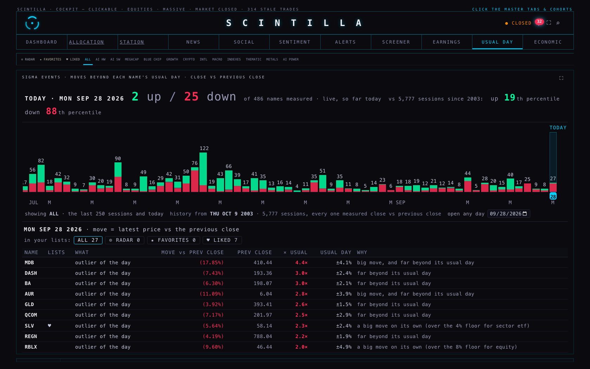
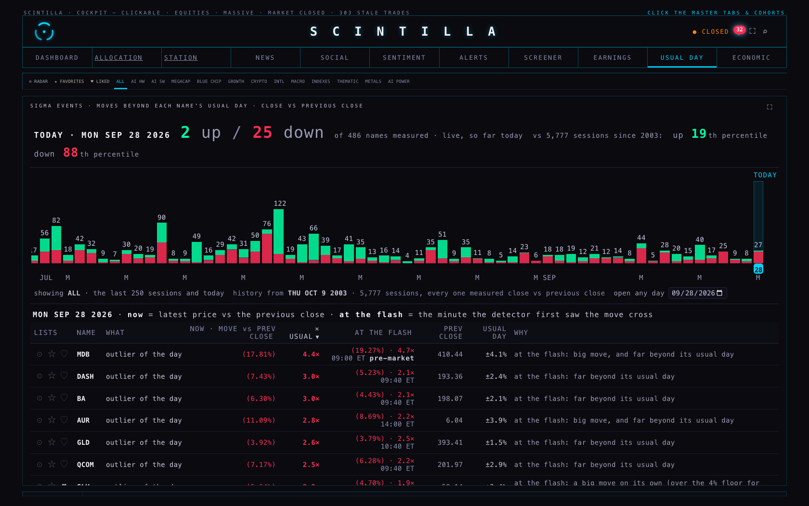
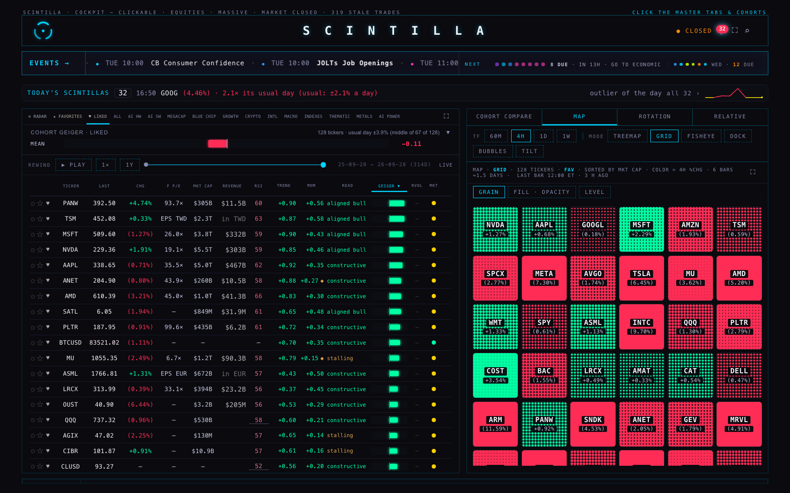
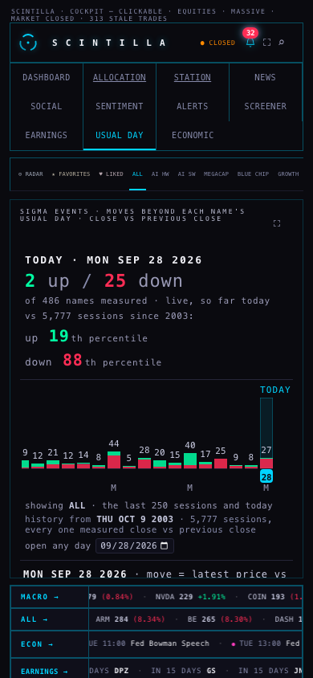
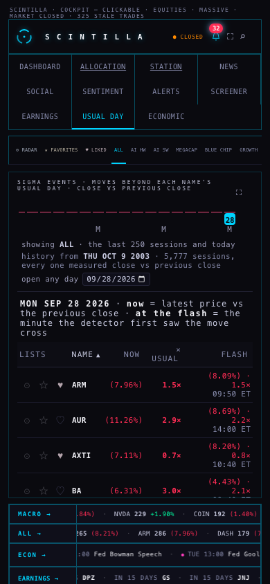
3 · ONE EVENTS STRUCTURE
| Part | EARNINGS room (before) | ECONOMIC room (before) | Both rooms now |
|---|---|---|---|
| Sliding tape at the top | Yes, with NEXT at its right end | No — a still NEXT strip | Yes. ECONOMIC → slides this week so far + the next 7 days, NOW marker, NEXT at its end |
| Colour | Gold dot per report | Category colour in the calendar | Each release's dot is its category (the calendar's legend); High importance is drawn heavier |
| Flash rules | Release rules at the report's slot | Still until the hour, breathing inside it, a hard pulse at the minute | Unchanged and shared: the tape uses the bottom band's items and states; NEXT is the dashboard header's own queue, flashing on the same clock |
| Controls + table | Season slider, day / week / month squares | Region, category, day bar, DAY / WEEK / MONTH | Kept as they are in each room |
| Right-hand lists | UPCOMING table + PAST REPORTED | Macro rail only | ECONOMIC adds UPCOMING · RELEASES (est, prior, countdown) and PRINTED · THIS WEEK (actual vs est, beat/miss) above its rail |
| Phone | NEXT hidden | NEXT strip visible | NEXT drops under the tape in both rooms instead of disappearing |
Nothing new is read: the tape and lists use the one US calendar read the header and the bottom band already share. One switch (ECON_ROOM_TAPE_ON) puts back the old still strip. The top EVENTS tape and the bottom bands are unchanged (your decision on the bottom earnings band is still open).
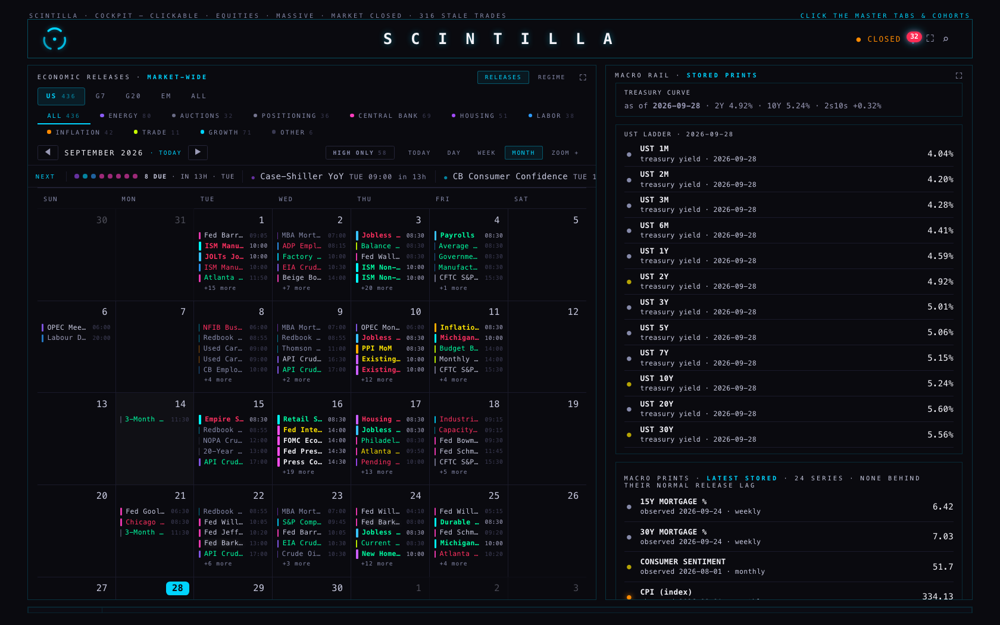
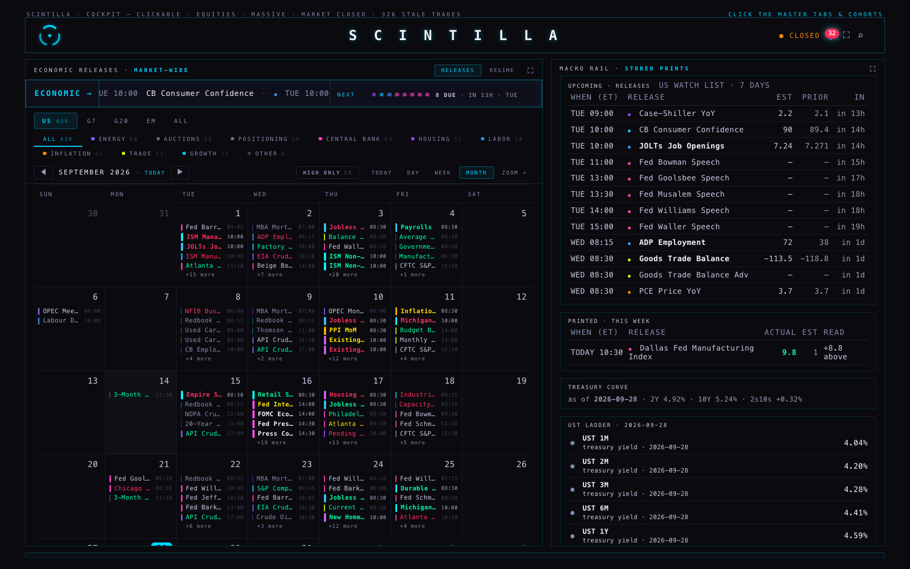
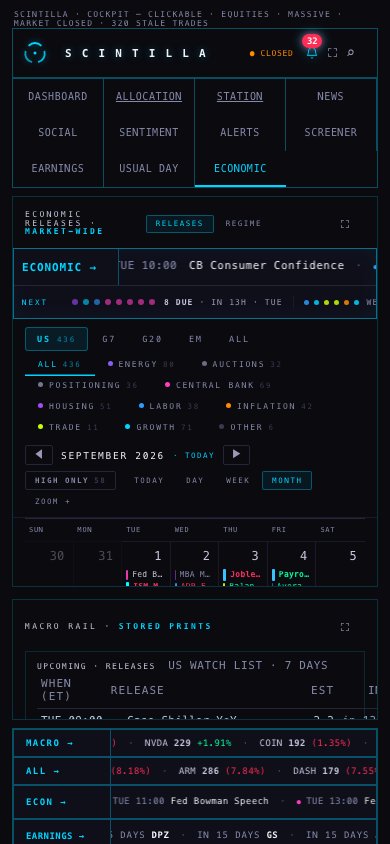
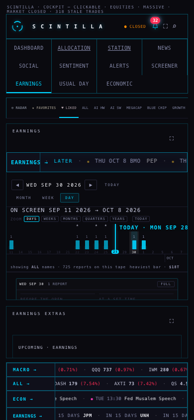
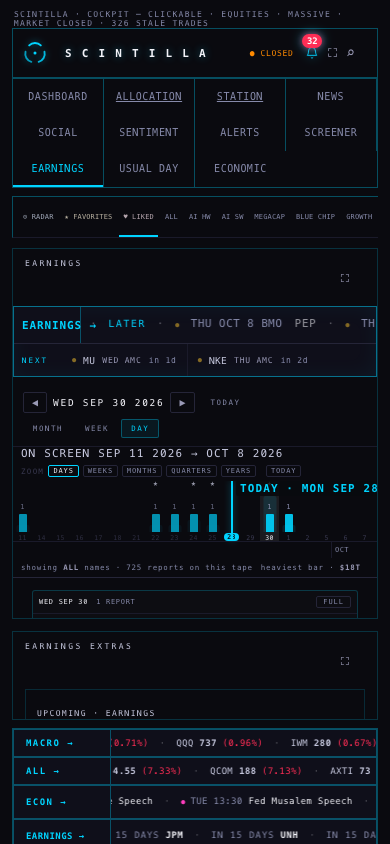
4 · THE BOARD
Forward P/E blank until a refresh — the race
Every optional read the board makes has a 4-second deadline. The forward-estimate read comes in pages of 1,000 rows, one after another. When the database is slow (the page's own record shows full pulls at 17.5 s median during market hours), the deadline won, the answer that arrived a moment later was thrown away, and on a first load there was nothing older to fall back on — so every F P/E read "—" until a later pull. I replayed it by holding the estimates back 6 seconds: before, all 128 cells stayed "—" at 15 s (and TSM's tooltip wrongly said no estimate was stored); after, the late answer is kept and the cells fill where they stand (57 multiples, NVDA 19.1×). Nothing is read twice. The cells are also recomputed from the latest known price, so a name that was priced after the pull does not wait for a tick that never comes after hours.
TSM "EPS TWD"
Taiwan Semi reports its estimates in Taiwan dollars; the price is in US dollars, so the page withheld the multiple. The supplier gives both for the same quarter: TSM's Q3 26 USD EPS estimate per ADR is 4.39 and its TWD one is 139.58 — a rate of 0.03145; its revenue estimates give 0.03146. Same number, so the TWD figures are already per ADR and the ratio is a real rate. The board now converts only when the EPS ratio and the revenue ratio agree within 3%, marks it ≈, and its tooltip gives the rate, the quarter and both ratios. TSM reads ≈23.4× (614.97 TWD × 0.03145 = $19.34 NTM EPS against $452), ASML ≈32.4×. Any name whose ratios disagree keeps "EPS TWD". Revenue in TWD is still not converted.
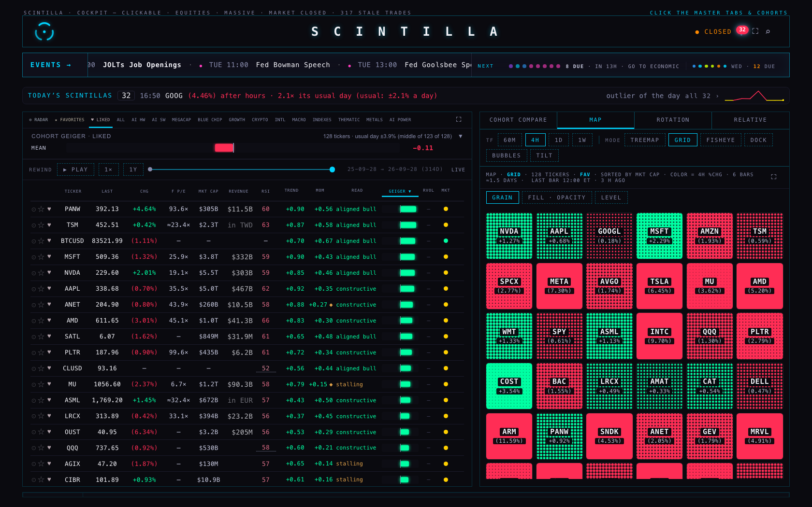
Full screen
Measured at 1680: the full-screen board ran from 29 to 1652 px while the page frame runs from 46 to 1634, so its edges and cohort selectors ran past the frame. It now follows the header's edges exactly (46 → 1634). The cohort selectors wrap at 11 px instead of 9 px, and every number sits right-aligned in a track sized to what it holds (TREND and MOM no longer run into READ's words). This applies to today's columns too.
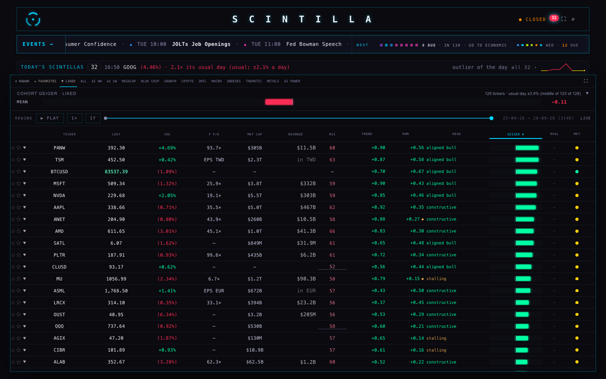
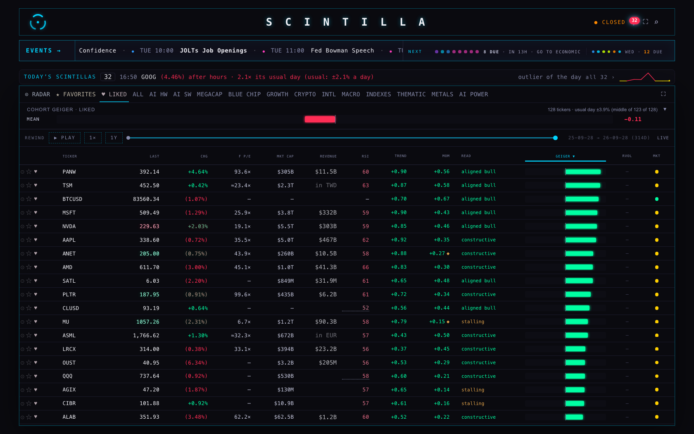
The proposal: two column sets (built, behind a switch, OFF)
| Set | Columns |
|---|---|
| Beside the left panel (11) | ⊙★♥ · TICKER · LAST · CHG · F P/E · MKT CAP · RSI · READ as an icon (⇈ aligned bull, ↗ constructive, → stalling, ⤵ pullback, ⤴ turning up, ↑ mom leads, ↔ mixed, ↘ broken, ⇊ aligned bear) with ◆ when trend and momentum disagree · GEIGER with its number · RVOL · MKT. REVENUE, TREND and MOM step out. |
| Full screen (14) | Everything: REVENUE, TREND and MOM numbers come back, READ in words, the Geiger keeps its number. |
The icon and ◆ are the board's own read (the same rule the Cohort Compare strip uses) — nothing is computed differently. To try it, open the Hub with ?board=v2 (remembered on that device); ?board=v1 goes back.
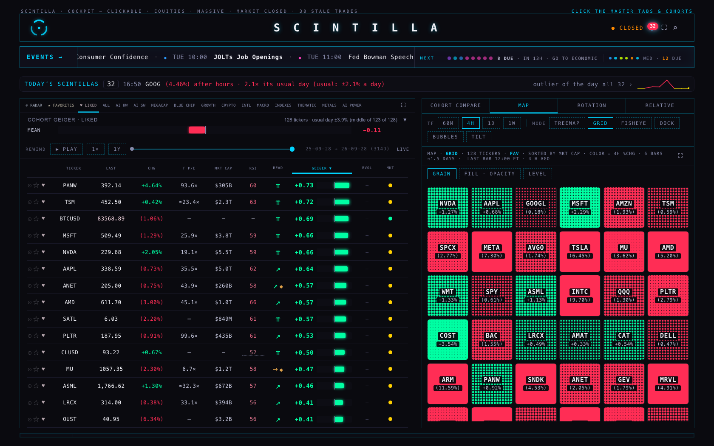
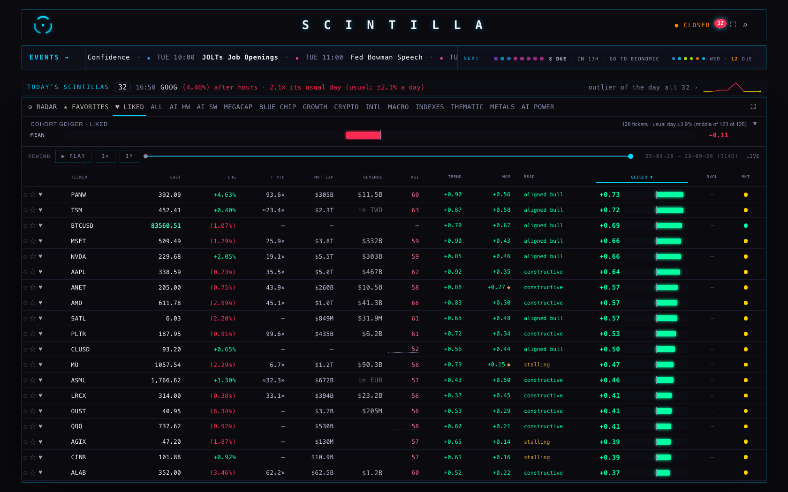
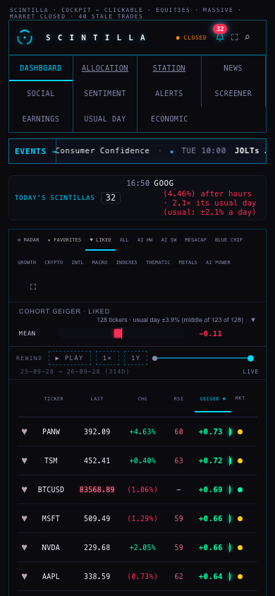
5 · COHORT COMPARE · THE BOW TIE
COHORT COMPARE → SECTORS → BOW TIE. Each bar is the equal-weight fund's Geiger minus its cap-weight twin's: RSP − SPY, QQQE − QQQ, EQAL − IWB and the eleven RSP* sector funds against their XL* funds. Above zero, the average stock is stronger than the index; below, the index is carried by its biggest names. Sorted high to low, the bars fan out — the bow tie. The column shows the sector's short name; hovering shows the pair and both Geigers (for example "COMMS · RSPC (equal-weight) −0.67 − XLC (cap-weight) −0.19 = −0.48").
On the evening of 28 Sep: discretionary, materials and real estate +0.06; S&P 500 −0.83 (RSP −0.53 vs SPY +0.29), comms −0.48, tech −0.17, Nasdaq-100 −0.16. EQAL and IWB have no Geiger yet, so that pair says so and draws nothing.
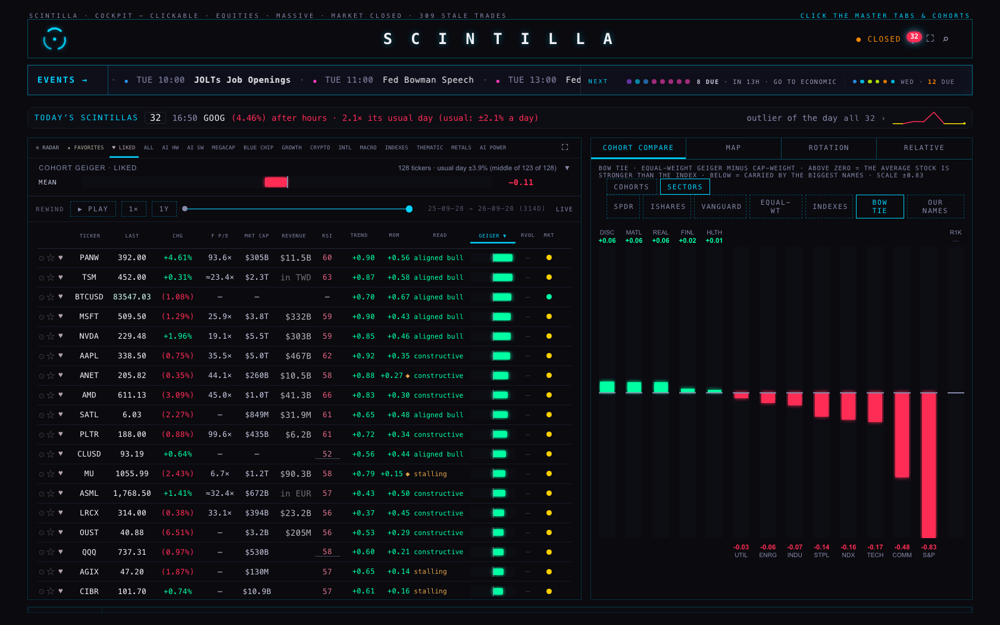
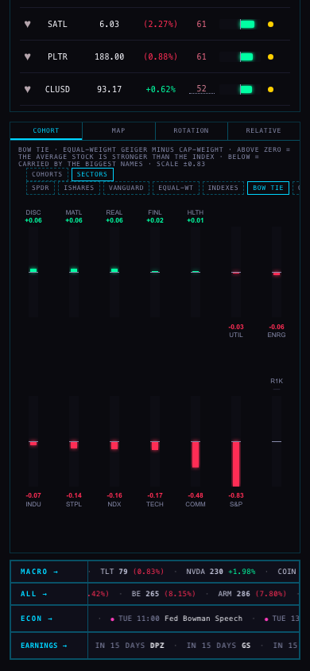
WHAT COULD BE WRONG
- The ≈ conversion rests on the supplier's own estimates being paired correctly by quarter (a report within 110 days after the quarter end). The 3% agreement check is the guard; a supplier change in how it states ADR EPS would make the check fail and the cell go back to "EPS TWD", not show a wrong number.
- "After hours" is judged against 09:30–16:00 ET and the page's own NYSE holiday list; an early-close day (13:00) is not treated specially.
- The bow tie subtracts two Geigers on the same scale; it says which basket is stronger, not by how much in returns.
- The slow-database replay proves the fix for a late answer; I could not reproduce the blank on the real database from here (reads answered in ~140 ms).
WHAT I DID NOT DO
- Did not deploy, and did not change the detector itself (it still records the first crossing, after hours included — see decision 1).
- Did not convert revenue in foreign currencies, only forward EPS.
- Did not switch the v2 board columns on, and did not move the bottom earnings band.
- Did not add EQAL / IWB Geigers (they need admission to the Geiger list).
- The REGIME room still uses only the left half of the screen at 1680, as before.
DECISIONS FOR YOU
- Should the detector ignore after-hours prints? GOOG's flash came from a thin 16:50 price. My recommendation: yes for single stocks — flash on the regular session only and label pre-market moves as their own kind.
- Switch the v2 board columns on? My recommendation: try
?board=v2for a day; if the icons read well, make it the default. - Admit EQAL and IWB to the Geiger list so the Russell 1000 bow-tie pair can draw. My recommendation: yes, both.